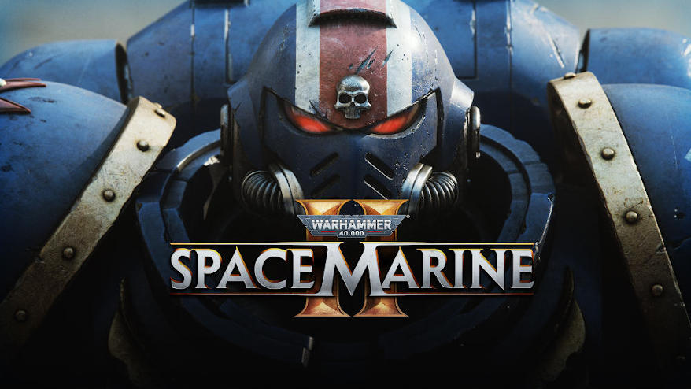

Main • Fiction • About • Contact • News • Extras

"No bastard ever won a war by dying for his country. He won it by making
the other poor dumb bastard die for his country.
- George S. Patton, who would probably be very much at home in M42.
- Garth Marenghi, Cato Sicarius’ favourite author.
***
Anway, I have a very nice chaise longe for you. It's specially reinforced because, and I hope you don't mind me saying this, you are a bit heavy. Especially in your new Primaris armour. Well done on the upgrade, by the way!
Oh.
Anyway, our session is about to begin. Lie back, note where the box of tissues is, and I'll get my notebook ready. Shall we begin?
This is not a review of Space Marine 2. At least, not in the usual sense. Every man and his servo skull have already raved over it. And with good reason. Visually and in terms of gameplay, it is spectacular. A feast for the eyes as well as capturing and building upon the sheer intesity and and mayhem of the original game's combat. It is precisely what a sequel should be, paying tribute to what came before, while buidling upon and improving it. Features like camera mode and a PVP that will probably ruin marriages only add to the banquet.
My only quibble is the plot, which rather diminishes Titus, and not just in terms of his paygrade. Space Marine 1 served as a critique of 40k, as well as a celebration of its best bits, a much-needed slapdown of Matt Ward's noxious fanwank and naive, unironic celebration of what is, after all, a fascist society.
But Space Marine 2 doubles down, and wallows in this. At the heart of it is a strange sort of worship of Titus’ chapter, the Generic Dudes of the Adeptus Astartes, the Ultramarines. A stodgy board of micromanagers and ‘benign’ dictators, which Games Workshop has decided are the posterboys for the game as a whole.
This includes the appearance of the Chapter’s master, Marneus Calgar, the Rich Tea biscuit of 40k named characters. It all serves to make Titus a bitplayer in his own story, where the real stars are the boring, anally retentive sods which the Captain Titus character was meant to be a deconstruction of.
Often, it lurches into stock grimdark, a reversion to a conservative, corporate and brand-friendly mean. We see this in a lot of Warhammer media, like the recent Tithes series, which proffers a level of misery porn that rivals an Eastenders Christmas Special. This shit is meant to be fun, people!
Throw in an overall plot that repeats the same structure as the first game, with ‘Nids and Tzangors standing in for Orks and Bloodletters, and a rather insipid Thousand Sons sorceror doing the same thing as Nemethor, but with much less impact. It is, at its worst, rather uneven, not to mention perverse.
This is one-sided, of course. At its best, the story does have genuine moments of poignancy, horror and, yes, comedy. Like the arsehole Tech Priest who insults Titus and chums non-stop while they’re running errands for him, or the moment with the leg. You know which one I’m referring to. Or where “the Codex does not support this action” stops being an admonition and turns, once more, into a roller coaster ticket.
But at its best, Space Marine 2 is really about Lieutenant Titus, a decent bloke who's been utterly ruined and is suffering from something very close to severe clinical depression, which the game handles with a surprising delicacy and nuance. He's not quite suicidal, but he's certainly preoccupied with death.
He has also been robbed of his self worth, and oh, how it shows at times. This is demonstrated at the climax, where he is literally on his knees making wookie noises while Marneus Calgar bellows at him to get up. Or where he blames himself for his predicament, rather than the monumental betrayal he has had to endure.
This is not the Captain Titus we met in the first game. He is a much harsher, angrier man, but also one who still wants to do right by other people. Duty is the only thing that's keeping him going, but it is no balm for a gravely wounded soul.
Needless to say, this does not always go very well, like the scene where he tries to comfort a grieving battle brother by, err, telling him that they're all going to be dead eventually too. Or when he's bollocking his subordinate for being a violent idiot and tells him their duty is not to hate, but to 'die for the Emperor'.
Here we reach the heart of the matter. This is a man for whom the very value of life has lost its meaning, who, silently, welcomes the possiblity of death when his position is about to be swarmed, in the best traditions of Space Marine last stands.
This is par for the course for the Imperium, morbid, melancholic hell-sewer that it is. The whole point was that Titus was once an exception to this, and where the story acquires its shocking power. He’s broken and a life of violence and “eternal duty” will not save him.
One moment which brings this home is when Titus and his squadlet run into an Ultramarine dreadnought (who may or may not be Boltgun’s Malum Caedo after one too many trips to the Apothecarion). And here the tone shifts.
Because that crazy, half-dead bastard is a joy to behold as he proceeds to join the crew and murder the living shit out of everything that moves. It’s funny, exhilarating and self-aware, as the dreadnought spouts dramatic oaths and a desire to take on the Thousand Son’s Daemon Primarch, Magnus The Red. (Who did everything wrong.)
This culminates in a glorious moment where a Helldrake (a daemonic flying war machine) lands, and you expect another gruelling boss fight... Until the dreadnought casually twats it with a big lump of masonry. I was laughing and cackling like a loon. The old excitement and joy flooded back. I got funny looks off my youngest.
But then Titus and chums parted with the Dread and returned back to their own storyline. And once more, we are weighed down by the ol’ black dog.
Does Titus win? Yes. But the poor bastard prevails in the least healthy way possible. He doesn't really get better through the game, but instead is forced to 'get with the program' through peer pressure, guilt trips and well-meaning, but essentially clueless leadership. Mental health isn’t a priority in the grim dark future. You may have noticed.
After the final showdown, Titus has to be all but dragged back up to his feet. Grudgingly, relucantly, but with resignation, he gives the Ultramarine salute, a fist pounded into the chest where his human heart is, like a crude form of CPR. All the Ultramarines do it. The accidental symbolism is painfully clear. This is not the good ending.
That happens afterwards. In the very last scene Titus does start to heal, not by having orders barked at him, or barking orders at others, or killing all and sundry in a five light year radius, but by having both his achievements and traumas acknowledged.
And, more importantly, by the bond he has slowly, painfully achieved with his two equally messed up subordinates, and the genuine admiration finally shown to him by the man who replaced Titus as Captain of the 2nd Company. Well done, Titus! You made a Scotsman like you. Now stop hating yourself so much, you big, magnificent lug!
The final shocking twist, of course, is that the middle management rat-bastard Chaplain who’s been sticking the boot in throughout the game, and who has been treating Titus like Rolf Harris at a kiddies’ pool party, is also the very same little shit who ruined his life in the prequel.
As the Chaplain removes his helmet and reveals the most punchable face in the galaxy, Titus spits out his real name with contempt and anger in equal measure. Leonatus. And there is a moment of relief, a sense of catharsis, of the true cause of all that pain and shame finally being confronted. AND WE FEEL IT WITH HIM.
You didn’t fuck up, Titus. You were fucked over, and the turd has just ‘volunteered’ you for another dangerous mission. Roll credits. Roll on the DLC and Space Marine 3. And, perhaps, the promise of Lieutenant Titus finally getting his mojo back. Your fellow lieutenant, Mira of the Cadian 203rd, would be proud.
If Space Marine 1 was about the need to acknowledge our humanity and to avoid dogmatic thinking, Space Marine 2 is about that other aspect of Astartes life, brotherhood. Or rather, the social bonds we all need to thrive. (Power of friendship, blahblahblah, fetch me the sickbucket, senpai! Etc.)
IIt is this which will save us, rather than duty or just blasting the shit out of everything. Whether the game and its developers realise this or not doesn’t matter. Stories acquire their own lives, and meaning.
Regardless, after a 13 year wait, we now have the spectacular we’ve been yearning for – and the very personal story that comes with it. NOW BLAM SOME HERETICS!!! (It’s good for the soul.)
[ENDS]
© Alexander Hay 2022-2024